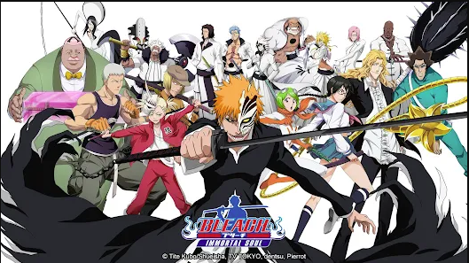

ჩემი Top-ანიმეები
One Piece

One Piece About
„One Piece“ — იაპონური მანგას სერია, დაწერილი და ილუსტრირებული ეიჩირო ოდას მიერ. იგი იბეჭდება ყოველკვირეულ გაზეთ Shueisha-ში, 1997 წლის 19 ივლისიდან. დღემდე გამოცემულია 97 ტანკობონი. სიუჟეტში მოთხრობილია მანკი დ. ლუფის შესახებ. იგი ახალგაზრდა მეკობრეა, რომელიც შემთხვევით ჭამს „ეშმაკის ხილს“, რის გამოც მისი სხეული იცვლება და რეზინის ხდება. იგი ქმნის ჩალის ქუდიანი მეკობრეების დაჯგუფებას და იკვლევს დიდ გამყოფ რიფს, რათა აღმოაჩინოს მსოფლიოს უდიდესი საგანძური და გახდეს მკობრეების შემდეგი მეფე. დანარჩენს აღარ დაგასპოილერებთ უყურეთ დამიჯერეთ არ ინანებთ ეს არის ძალიან კარგი ანიმე,რაც მთავარია უნდა იცოდეთ ინგლისური ენა რათა ნახოთ ეს ანიმე რადგან ქართულად მხოლოდ 400+ სერია არის გახმოვანებული,ხოლო One Piece-ის სერიები შეადგენს 1050+ და კიდევ გამოდის!
Bleach
Bleach About
ყველასთვის ცნობილია რომ ადამიანი რომელმაც შექმნა მანგა ბლიჩი, არის ტიტე კუბო რომელიც დაიბადა 1977 წლის 26 ივნისს. 18 წლისამ პირველად გამოაქვეყნა მანგა, სახელწოდებით Zombie Powder მაგრამ ეს ნამუშევარი არ დააფასეს. 22 წლის ასაკში იგი როგორც იქნა მიიღეს შონენ ჯამპში. მისი ნამუშევარმა Bleach - ძალიან პოპულარული აღმოჩნდა. ბლიჩში 500 - ზე მეტი მანგა ჩაპტერია გამოსული. 2004 წლიდან დაიწყო ბლიჩის ანიმეს გამოშვება. ხოლო 2005 წელს, ტაიტ კუბომ მიიღო შოგაკუკანის პრემია. 2006 წლის 16 დეკემბერს გამოვიდა ბლიჩის პირველი ფილმი, 2007 წლის 22 დეკემბერს მეორე, 2008 წლის 13 დეკემბერს მესამე და 2010 წლის 4 დეკემბერს მეოთხე. ბლიჩის ანიმეს გამოსვლა 2012 წელს შეწყდა და სავარაუდოდ 2-3 წელიწადში განახლდება, იმისთვის, რომ მანგის დასრულების შემდეგ, ბლიჩი ისევ დარჩეს მსოფლიოში 1-2 წლით მაინც